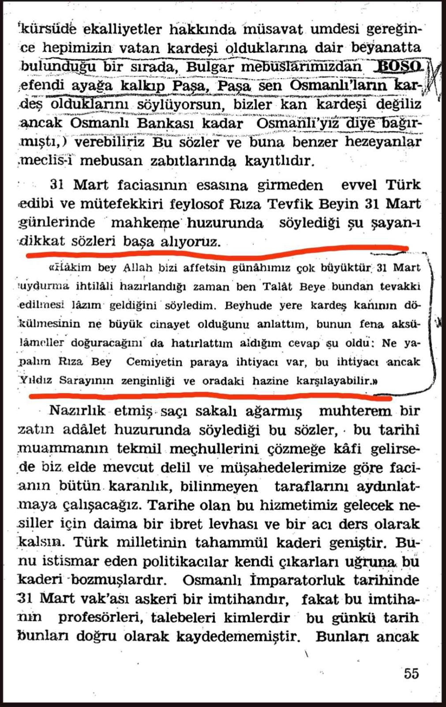
-BU İHTİLALİN DÜZENLENMESİNDEKİ AMAÇ NEDİR📚Mustafa Turan Taşkışla da 31 Mart(Mustafa Turan taşkışla da bizzat bulunmuş ve o dönemler genç bir asker dir kitap onun hatiralarıdır)
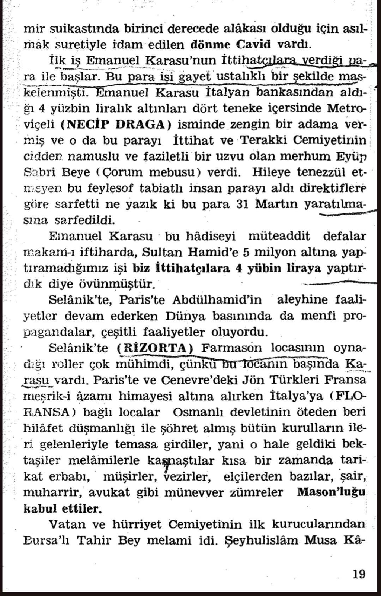
Aynı hatiratta İttihat ve Terakki cemiyetindeki mason yapılanmalarından da bahsediliyor. Konudan sapmamak için sahıslara odaklanmayacağim. Kitabın PDF sini isteyenlere dm den atabilirim bu hatırat üzerinde daha uzun araştirmalarda bulunmak için tamamını okuyabilirler 90 küsür sayfadan ibaret kısa bir hatırattır
-İHTİLAL NASIL BAŞLADI
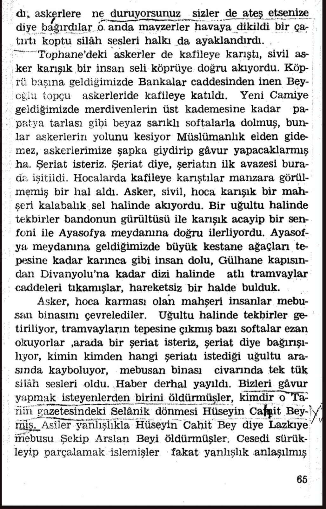1.belge
Ve neticede 31 Mart vakası müslümanın müslümana kırdırıldığı fitne ve fesat dolu ve bir grubun karanlık emellerini gerçekleştirmek için her yolu mübah saydığı bir olay olarak tarihe kara bir gün olarak geçmiştir
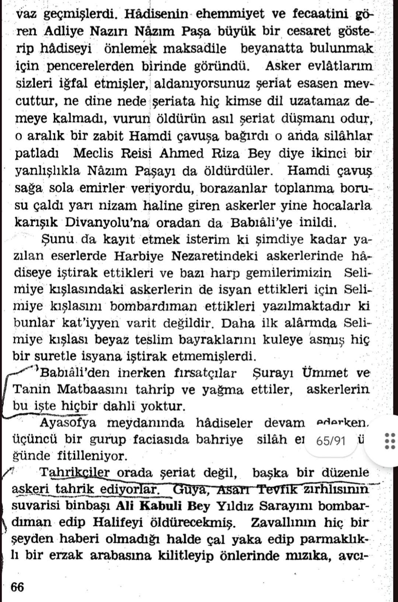
2.belge
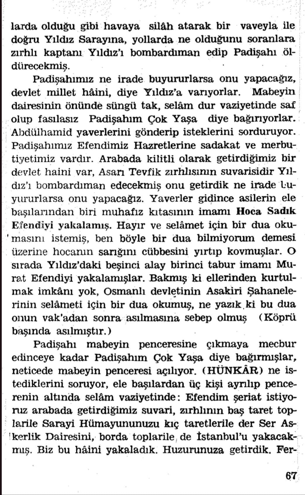1.belge
📚Ekrem Buğra Ekinci osmanlı'nın çöküşü sayfa:47
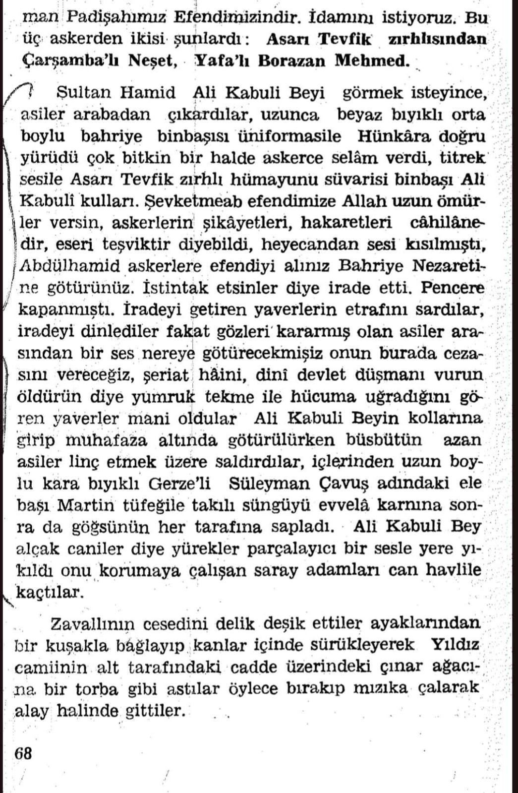
2.belge
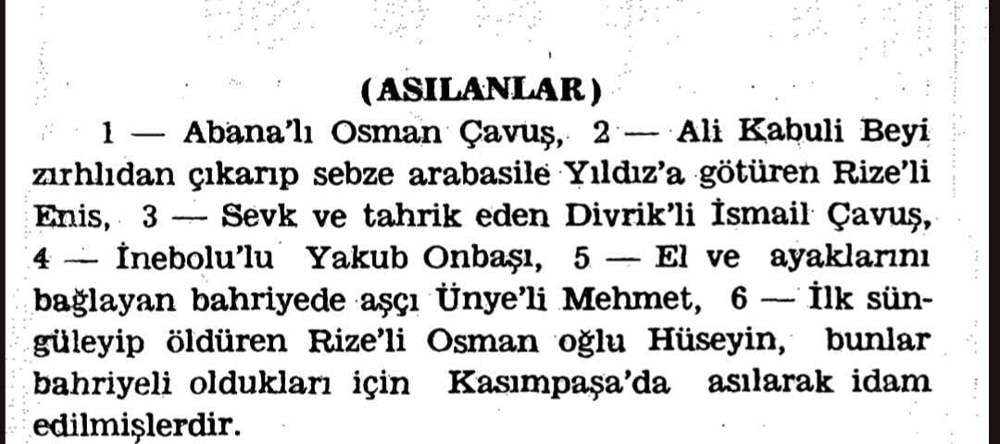
3.belge
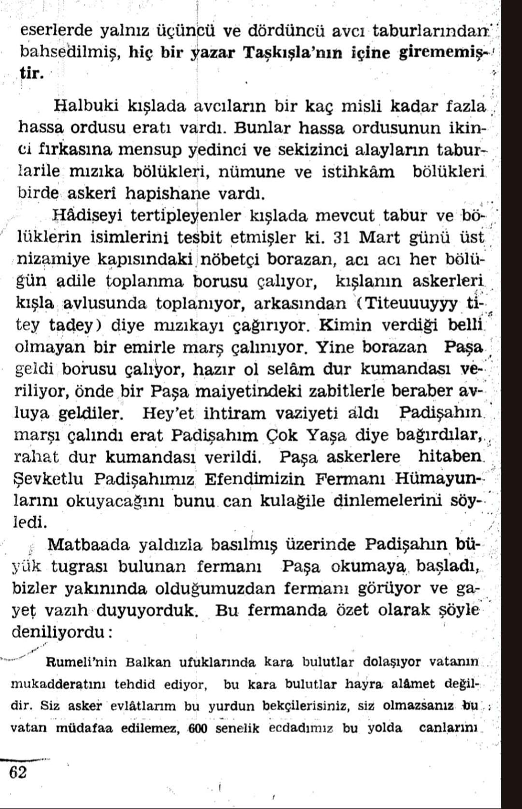
4.belge
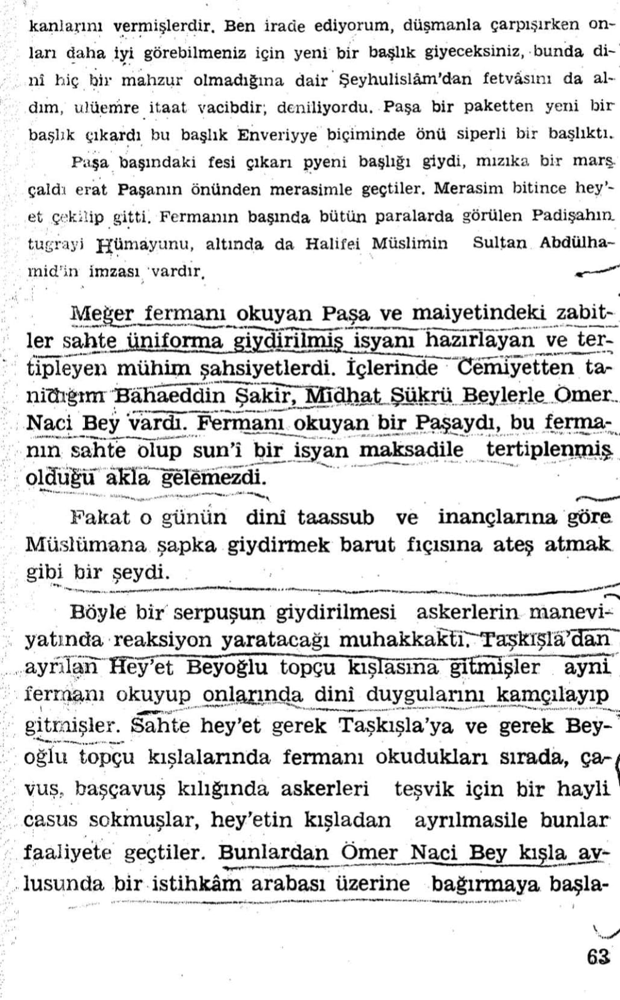
5.belge
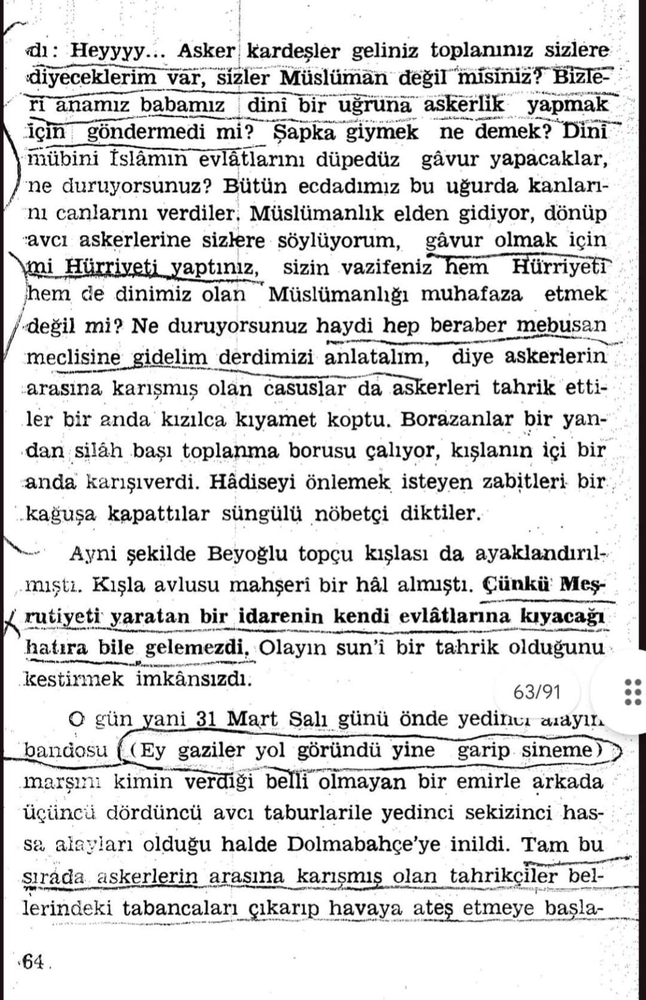
6.belge
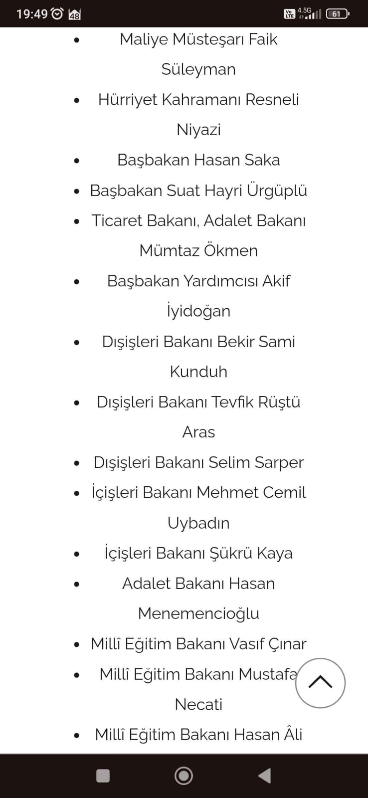1.belge
İttihat ve Terakki cemiyetinin devlet içerisinde nasıl bir teşkilat kurduğunu ve nasıl büyük bir kitleyi kendi arkasına aldığını göstermesi adindan önemli bir hadise dir -MASONLUKLA ALAKALI
-BÜYÜK ÜSTADLARDAN
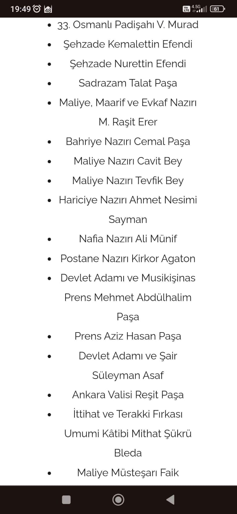
2.belge

3.belge
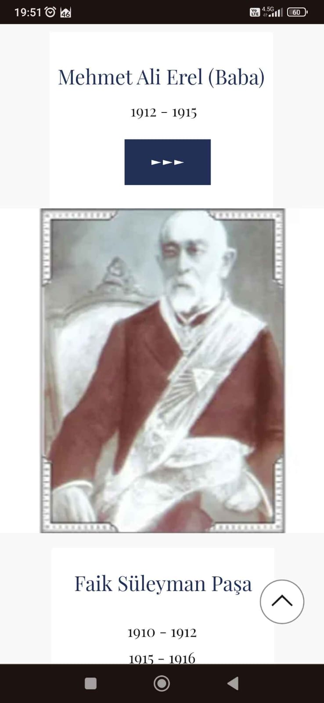1.belge
🛜Mason.org (ülkemizdeki büyük mason locasının internet sitesi) SONUÇ: Kanlı bir ihtilal ve yıldız sarayinin yağması ve ardından sultan Abdülhamid hanın tahttan indirilmesi ile sonuçlanmıştır
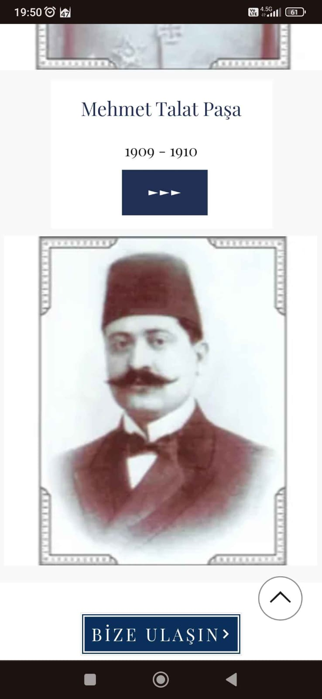
2.belge
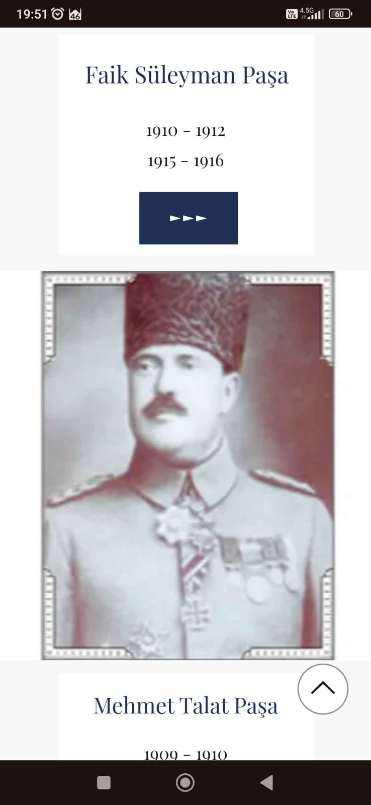
3.belge
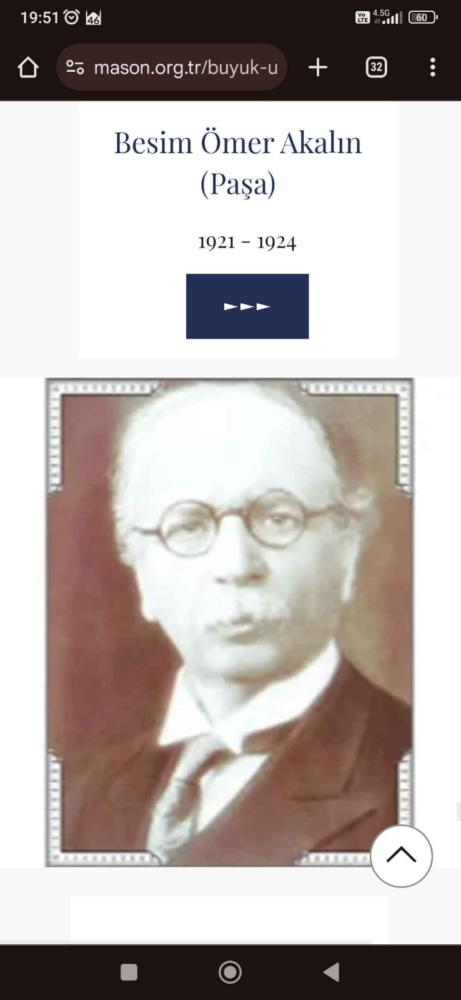